Checking bivariate palettes for colorblind friendliness
Jakub Nowosad
2020-08-14
Source:vignettes/articles/check_bivariate_pals.Rmd
check_bivariate_pals.Rmdlibrary(colorblindcheck) library(pals) bivcol = function(pal, nx = 3, ny = 3){ tit = substitute(pal) if (is.function(pal)) pal = pal() ncol = length(pal) if (missing(nx)) nx = sqrt(ncol) if (missing(ny)) ny = nx image(matrix(1:ncol, nrow = ny), axes = FALSE, col = pal, asp = 1) mtext(tit) }
par(mfrow = c(3, 4), mar = c(1, 1, 2, 1)) bivcol(arc.bluepink) bivcol(brewer.divdiv) bivcol(brewer.divseq) bivcol(brewer.qualseq) bivcol(brewer.seqseq1) bivcol(brewer.seqseq2) bivcol(census.blueyellow) bivcol(stevens.bluered) bivcol(stevens.greenblue) bivcol(stevens.pinkblue) bivcol(stevens.pinkgreen) bivcol(stevens.purplegold)
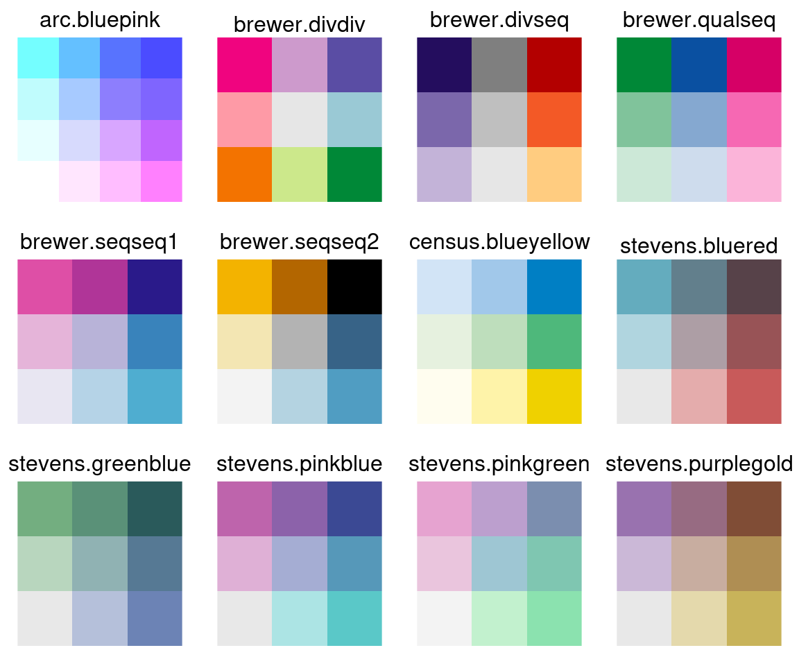
arc.bluepink
colorblindcheck::palette_check(arc.bluepink(), plot = TRUE, bivariate = TRUE)
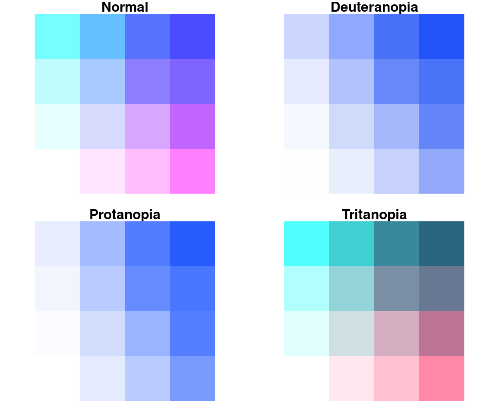
#> name n tolerance ncp ndcp min_dist mean_dist max_dist
#> 1 normal 16 7.135562 120 120 7.1355623 27.72463 53.76783
#> 2 deuteranopia 16 7.135562 120 100 0.3450842 19.79323 52.46731
#> 3 protanopia 16 7.135562 120 96 0.0000000 20.08030 50.20137
#> 4 tritanopia 16 7.135562 120 120 7.9914570 31.48801 71.57927brewer.divdiv
colorblindcheck::palette_check(brewer.divdiv(), plot = TRUE, bivariate = TRUE)
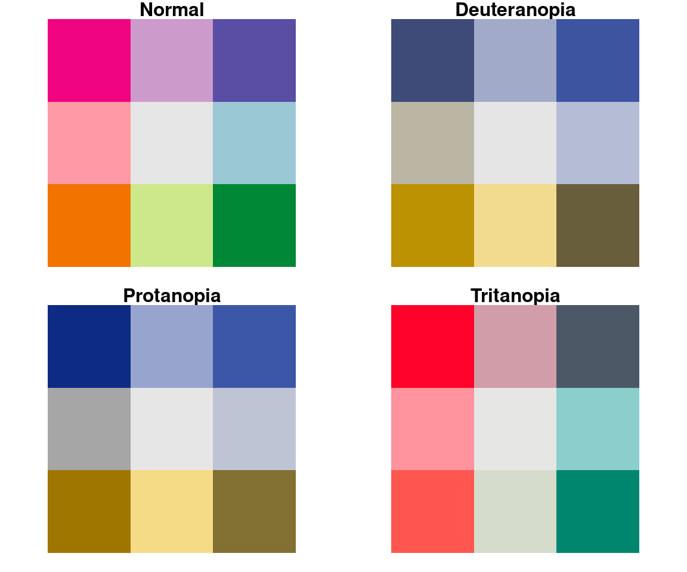
#> name n tolerance ncp ndcp min_dist mean_dist max_dist
#> 1 normal 9 16.97102 36 36 16.971022 42.56758 82.75525
#> 2 deuteranopia 9 16.97102 36 32 5.349421 35.43578 65.79011
#> 3 protanopia 9 16.97102 36 29 9.341778 37.39710 83.60763
#> 4 tritanopia 9 16.97102 36 32 7.848284 36.19699 65.42799brewer.divseq
colorblindcheck::palette_check(brewer.divseq(), plot = TRUE, bivariate = TRUE)
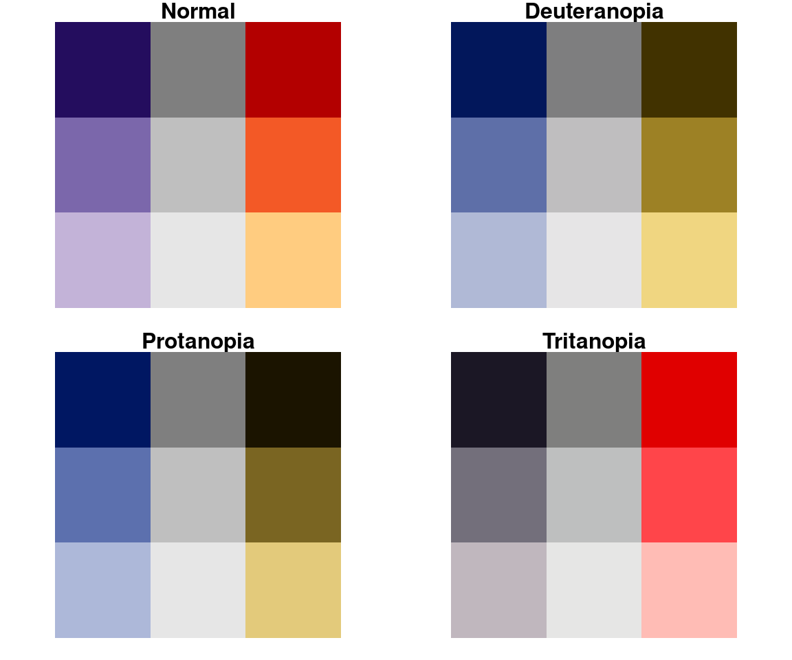
#> name n tolerance ncp ndcp min_dist mean_dist max_dist
#> 1 normal 9 9.237516 36 36 9.237516 38.32933 87.90123
#> 2 deuteranopia 9 9.237516 36 36 9.267188 39.85751 90.88415
#> 3 protanopia 9 9.237516 36 36 9.237516 40.79861 86.08385
#> 4 tritanopia 9 9.237516 36 35 6.777558 32.82160 83.10774brewer.qualseq
colorblindcheck::palette_check(brewer.qualseq(), plot = TRUE, bivariate = TRUE)
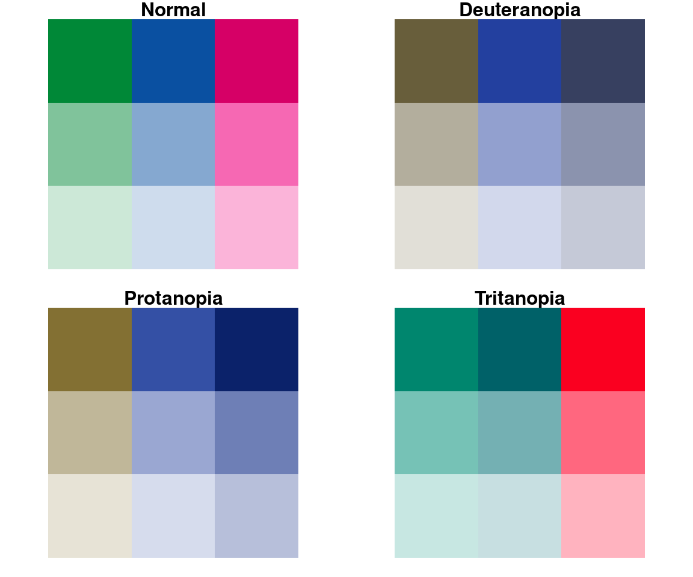
#> name n tolerance ncp ndcp min_dist mean_dist max_dist
#> 1 normal 9 14.93833 36 36 14.938334 42.05184 79.63286
#> 2 deuteranopia 9 14.93833 36 30 4.225354 32.02940 60.07044
#> 3 protanopia 9 14.93833 36 31 7.879535 35.47968 77.99824
#> 4 tritanopia 9 14.93833 36 33 4.535840 37.44470 65.19585brewer.seqseq1
colorblindcheck::palette_check(brewer.seqseq1(), plot = TRUE, bivariate = TRUE)
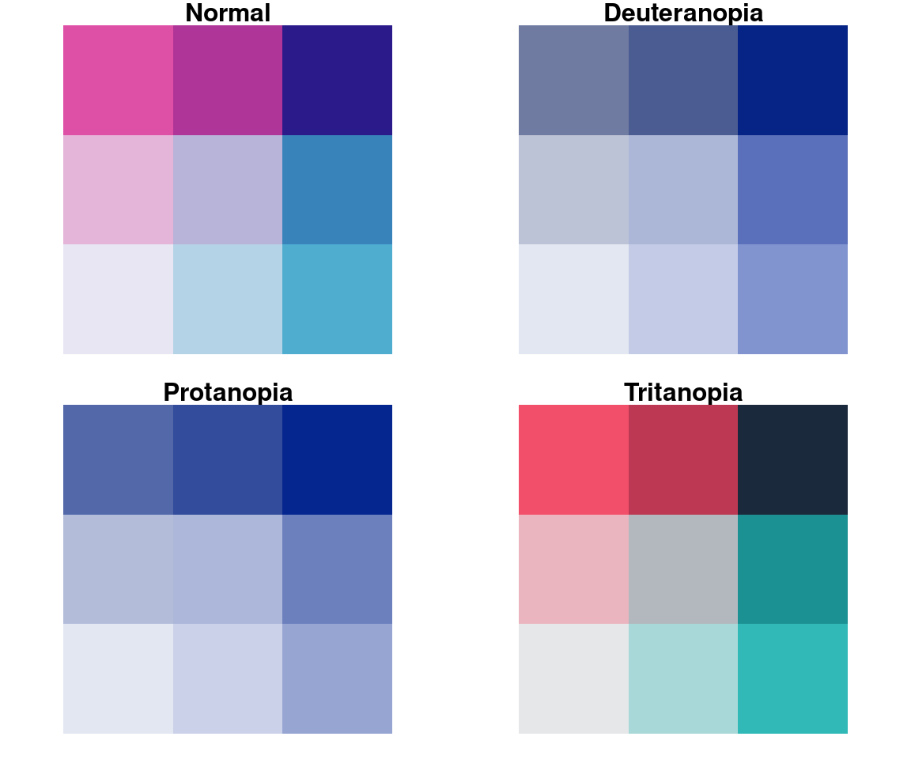
#> name n tolerance ncp ndcp min_dist mean_dist max_dist
#> 1 normal 9 12.48476 36 36 12.484763 34.39167 70.52906
#> 2 deuteranopia 9 12.48476 36 26 3.123667 25.51126 69.86109
#> 3 protanopia 9 12.48476 36 25 2.187866 26.44967 67.63712
#> 4 tritanopia 9 12.48476 36 34 11.810266 39.19929 73.31697brewer.seqseq2
colorblindcheck::palette_check(brewer.seqseq2(), plot = TRUE, bivariate = TRUE)
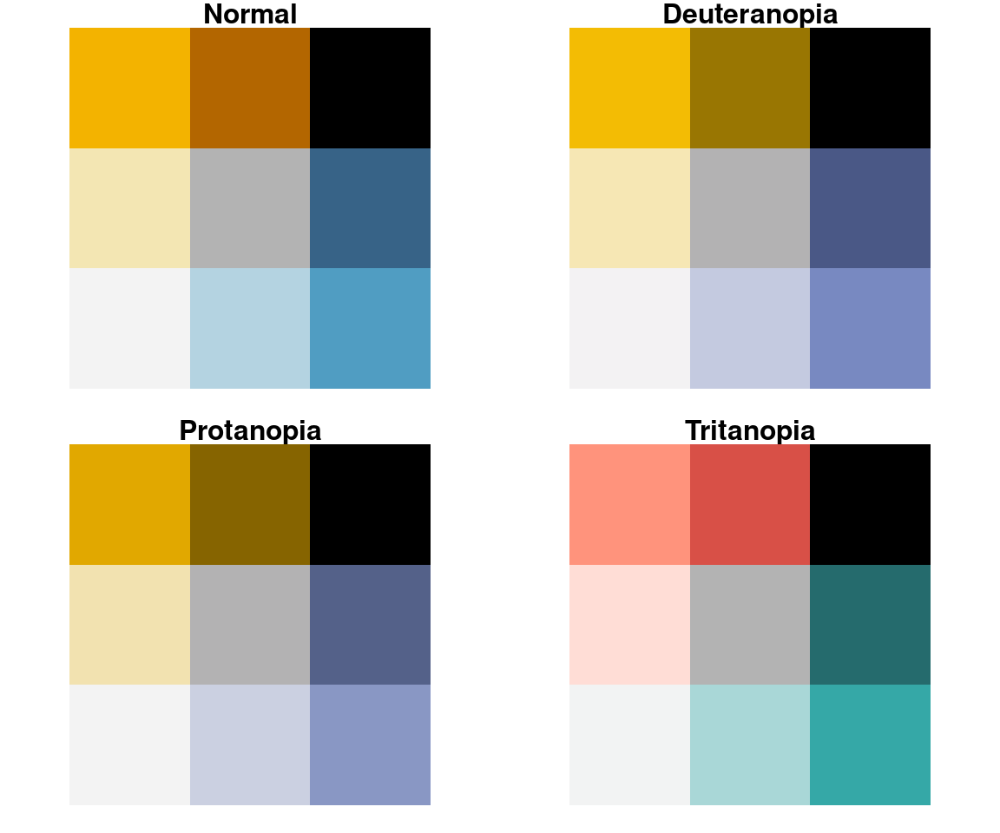
#> name n tolerance ncp ndcp min_dist mean_dist max_dist
#> 1 normal 9 13.21133 36 36 13.21133 39.99288 94.59810
#> 2 deuteranopia 9 13.21133 36 34 10.99234 40.33172 94.22020
#> 3 protanopia 9 13.21133 36 34 10.53062 38.99158 94.59810
#> 4 tritanopia 9 13.21133 36 36 13.66888 39.60803 94.48661census.blueyellow
colorblindcheck::palette_check(census.blueyellow(), plot = TRUE, bivariate = TRUE)

#> name n tolerance ncp ndcp min_dist mean_dist max_dist
#> 1 normal 9 6.669521 36 36 6.669521 29.31884 68.67608
#> 2 deuteranopia 9 6.669521 36 34 3.109975 29.29848 72.10845
#> 3 protanopia 9 6.669521 36 35 3.029608 26.76846 61.19465
#> 4 tritanopia 9 6.669521 36 35 5.244108 23.51816 47.28240stevens.bluered
colorblindcheck::palette_check(stevens.bluered(), plot = TRUE, bivariate = TRUE)
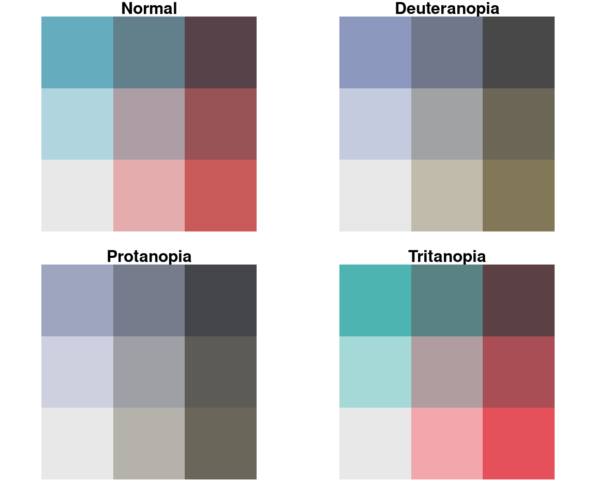
#> name n tolerance ncp ndcp min_dist mean_dist max_dist
#> 1 normal 9 10.93275 36 36 10.932747 32.73816 56.19377
#> 2 deuteranopia 9 10.93275 36 34 8.874805 25.34526 52.92728
#> 3 protanopia 9 10.93275 36 31 5.364234 24.49815 54.78701
#> 4 tritanopia 9 10.93275 36 36 12.397773 35.48679 61.51853stevens.greenblue
colorblindcheck::palette_check(stevens.greenblue(), plot = TRUE, bivariate = TRUE)
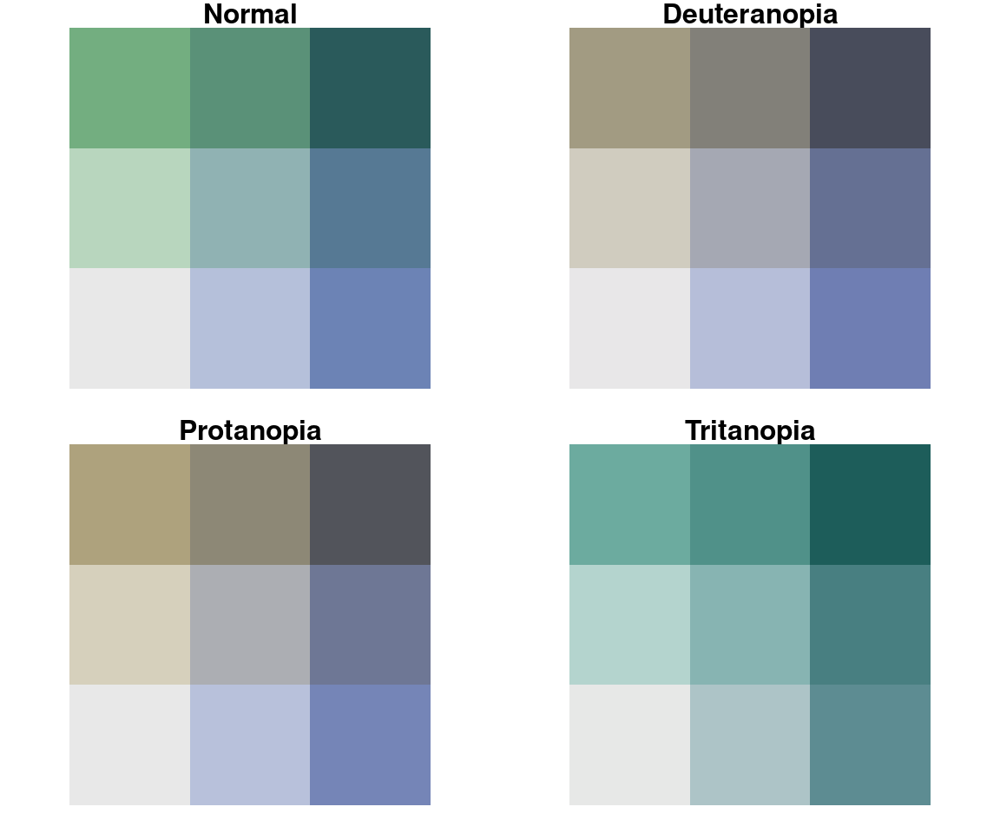
#> name n tolerance ncp ndcp min_dist mean_dist max_dist
#> 1 normal 9 9.29651 36 36 9.296510 26.34666 50.19184
#> 2 deuteranopia 9 9.29651 36 33 7.238684 24.60856 51.19105
#> 3 protanopia 9 9.29651 36 35 7.693015 24.51814 47.10098
#> 4 tritanopia 9 9.29651 36 29 6.154169 20.06474 50.20386stevens.pinkblue
colorblindcheck::palette_check(stevens.pinkblue(), plot = TRUE, bivariate = TRUE)
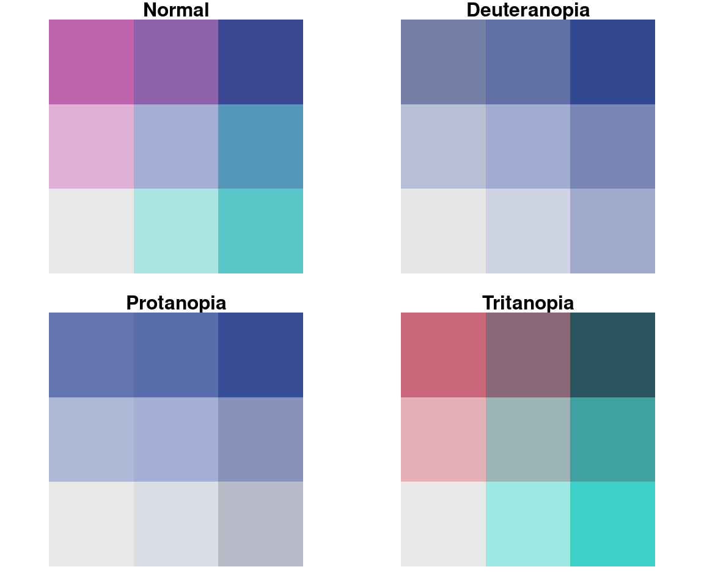
#> name n tolerance ncp ndcp min_dist mean_dist max_dist
#> 1 normal 9 10.87893 36 36 10.878926 30.75955 54.56011
#> 2 deuteranopia 9 10.87893 36 28 1.685378 20.77449 55.36962
#> 3 protanopia 9 10.87893 36 29 3.074943 21.92768 52.95747
#> 4 tritanopia 9 10.87893 36 35 9.921028 34.95981 59.38328stevens.pinkgreen
colorblindcheck::palette_check(stevens.pinkgreen(), plot = TRUE, bivariate = TRUE)
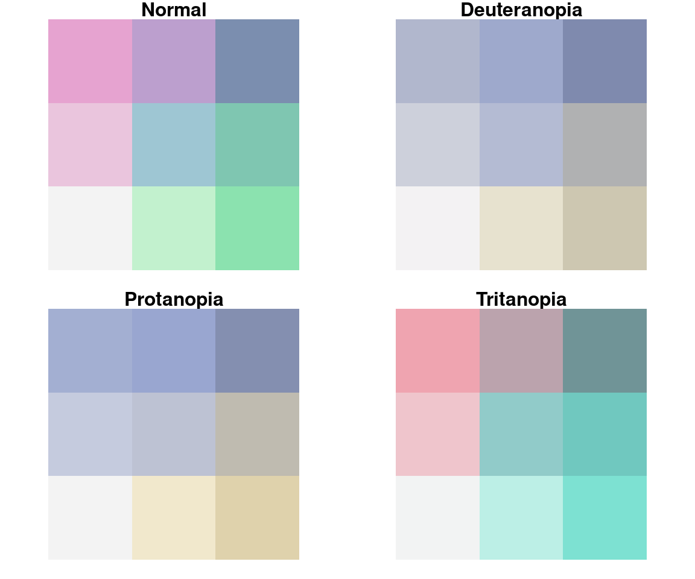
#> name n tolerance ncp ndcp min_dist mean_dist max_dist
#> 1 normal 9 8.367352 36 36 8.367352 27.08876 56.88416
#> 2 deuteranopia 9 8.367352 36 30 1.268511 15.68445 33.95271
#> 3 protanopia 9 8.367352 36 31 2.351299 18.10318 35.31026
#> 4 tritanopia 9 8.367352 36 33 5.644485 26.61700 49.43485stevens.purplegold
colorblindcheck::palette_check(stevens.purplegold(), plot = TRUE, bivariate = TRUE)
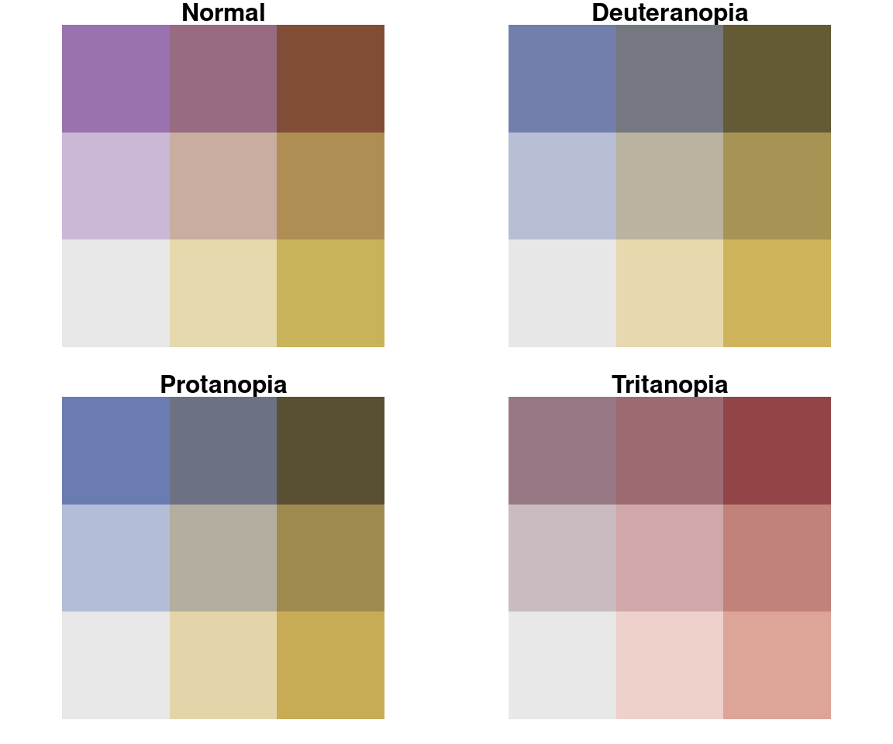
#> name n tolerance ncp ndcp min_dist mean_dist max_dist
#> 1 normal 9 11.97625 36 36 11.97625 30.13646 53.56032
#> 2 deuteranopia 9 11.97625 36 35 10.57857 27.58839 46.59557
#> 3 protanopia 9 11.97625 36 34 11.48625 29.32017 50.36899
#> 4 tritanopia 9 11.97625 36 28 6.31650 20.96426 49.27898